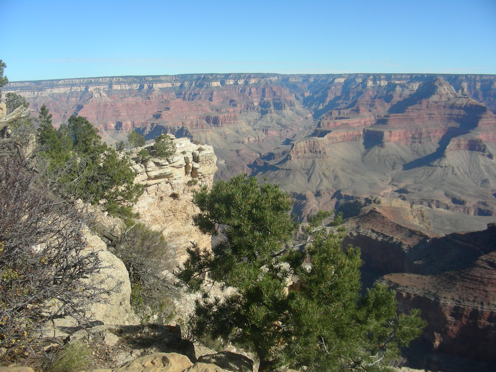
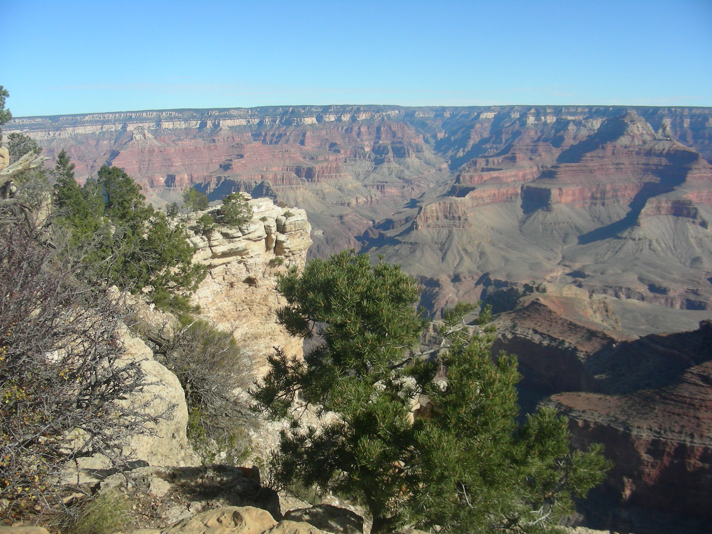
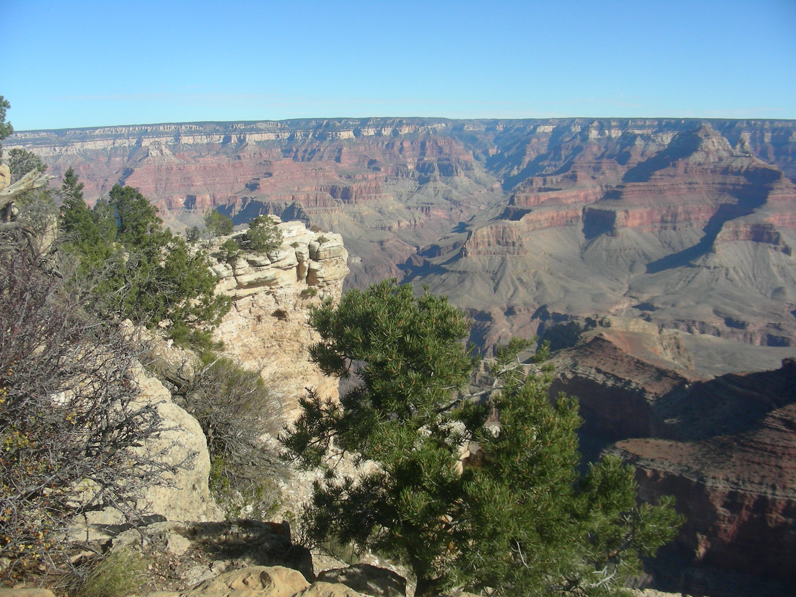

anch
House Cafe

anch
House CafeComplete Trip Gas And Lodging Expenses
Day 8 Sunday Oct 30
William, AZ to Needles, CA 321 miles
Attractions-
Rt 66 Mountain Pass -Very Scary and long
Burrows wandering Road
Floyd And Company Real Pit BBQ, Kingman,Az
Grand Canyon
T he Grand Canyon is not on Route66, but is just 54 miles north to the South Rim of the Canyon. Dorreen and I have never seen it, so we decided we had to go there. It was worth the sidetrip.
Words and pictures cannot describe the Canyon. It’s more than breathtaking. You have to see it in person to understand what a great wonder this is.
You could easily spend a week here, if you have the extended time. I don’t know what kind of restaurants and lodging is available, but I suspect it is vast. We didn’t have the time(we have a set date for our Outlaw Country West Cruise). We spent a few hours at the South Rim and enjoyed ourselves. We met some real nice people who were visting the Canyou for a few days. Along the rodeway, up and back down, we some some real nice groups of deer in the woods.
We hit the road heading back to Route66.
R

anch
House Cafe
We stopped here for lunch. What a wonderful place. This is a real, modern day diner with the Route66 feel. The Menu is extensive and the food is excellent! This is just, a great place to eat. The service is friendly and excellent. I wish we had one of these in our town, Crystal Lake,
Illinois.
Flintstones Bedrock City Raptor Ranch
This used to be just a Bedrock/Flintones park, but now have included Raptor Dinosaurs as the park theme. We just drove by and took some pictures. Looks cool enough, but we were itchin’ to get to California at this point. We felt we could do without this experience; but if we changed our minds, we would hit it on the way home. Maybe.
S
omewhere
along the line we stopped and ate at Floyd’s BBQ in Kingsman,
Arizona. Excellent food and service. Highly recommended!
H eading to Oatman, Arizona Route66 becomes somewhat rougher and dangerous. The route winds through with a narrow road, not designed for longer vehicles. There are few railings along the road. It would be very easy to fall off this part of the highway. Along the way watch out for mules standing in the roadway. These are descendants of the burros they used during Oatman’s Gold Boom. We went through this area very slow.
O atman Gunfight
When we got to Oatman, Arizona traffic was stopped on the main road (Route66). We were stopped behind one car and noticed the street ahead was full of people, blocking the road. We waited awhile, thinking that whatever happened would be cleared out soon. But that didn’t happen. Through the crowd we could see a couple of old west gunslinger types in the middle of the street. We quickly realized that they were performing an Old West Gunfight. We waited and watched patiently for about 30 minutes, till the show ended. It was pretty cool. The town looked interesting and probably would have been worth stopping for a while and having a beer, but we didn’t stop. Maybe some other time.
Onward, to California!
Hello California
We ended up our big day in Needles, California. Spending the night at a Days Inn.